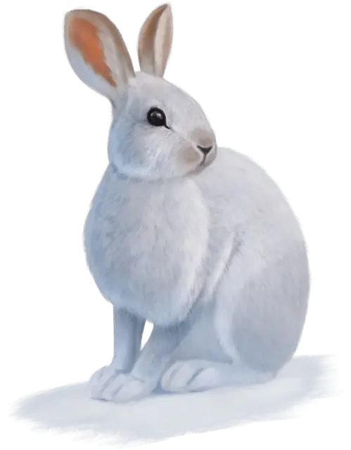

Заяц
Hare
Крошечный Зверь, без мировоззрения

Класс Доспеха 13
Хиты 1 (1к4 - 1)
Скорость 20 футов, копая 5 футов
| мод | спас | ||
|---|---|---|---|
| СИЛ | 1 | −5 | −5 |
| ЛОВ | 17 | +3 | +3 |
| ТЕЛ | 9 | −1 | −1 |
| мод | спас | ||
|---|---|---|---|
| ИНТ | 2 | −4 | −4 |
| МДР | 11 | +0 | +0 |
| ХАР | 4 | −3 | −3 |
Навыки Восприятие +2, Скрытность +5
Чувства пассивное Восприятие 12
Опасность 0
Бонус мастерства +2
Особенности
Побег. Заяц может на каждом своём ходу бонусным действием совершать действия Засада, Отход или Рывок.
Описание
Зайцы-беляки — кроткие травоядные норные животные, обитающие по всей долине Ледяного Ветра. Их уши короче, чем у других зайцев, и они приспособились к холодам.